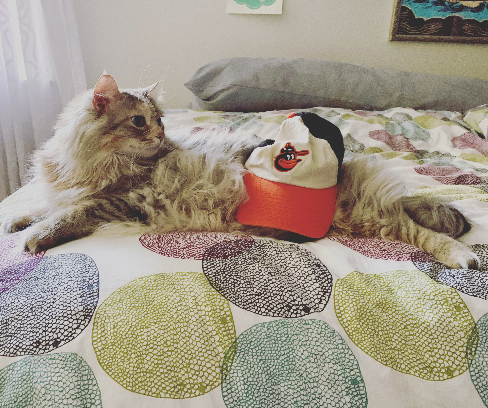
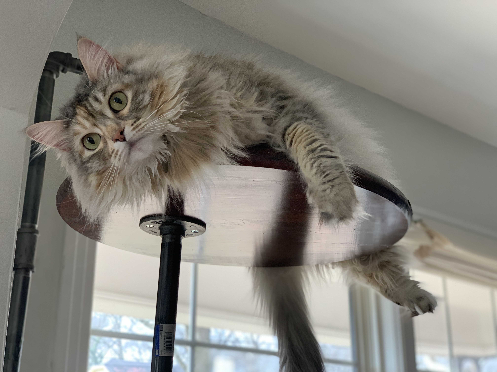
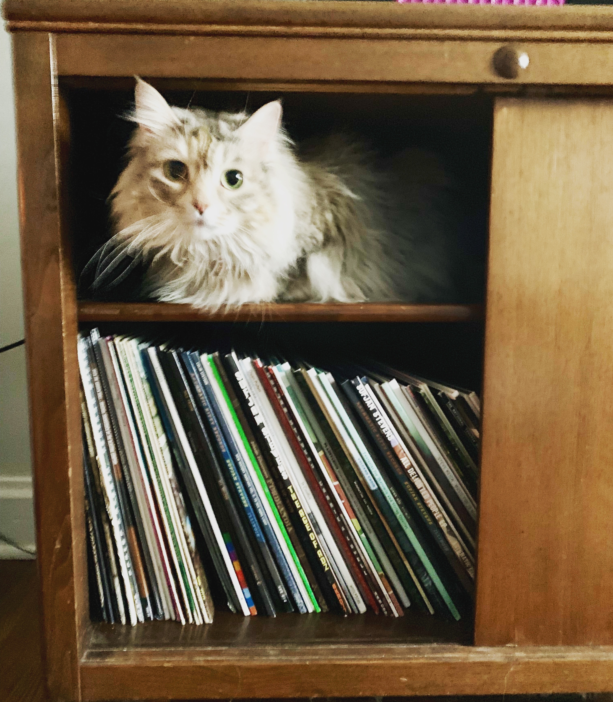
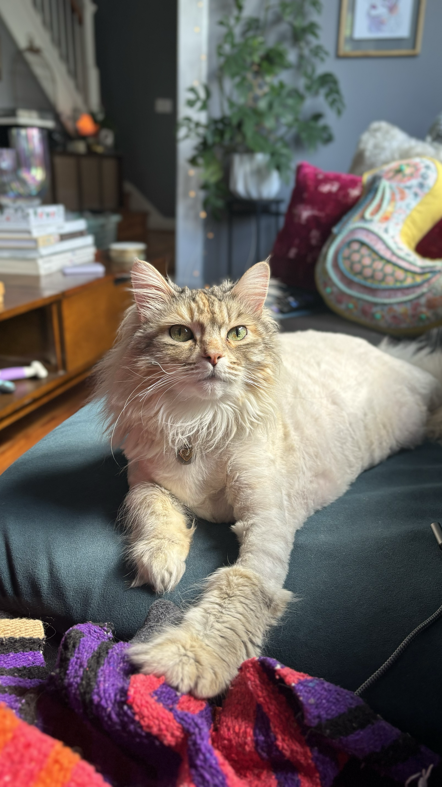
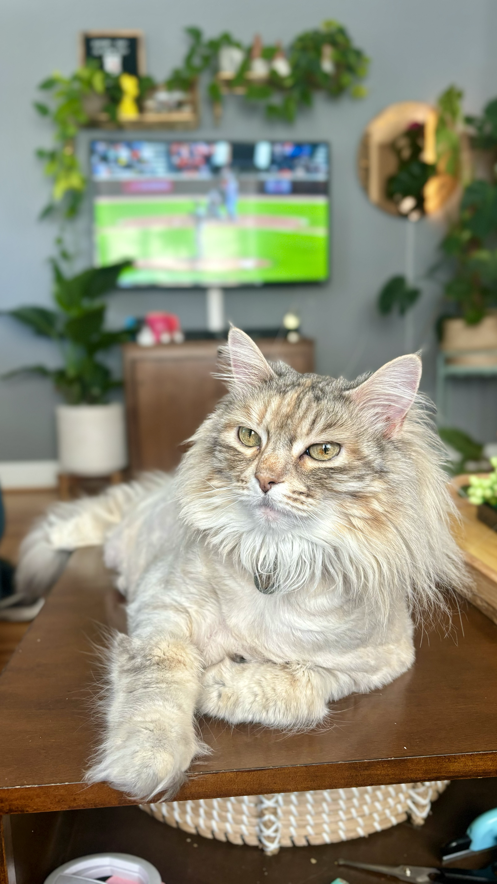
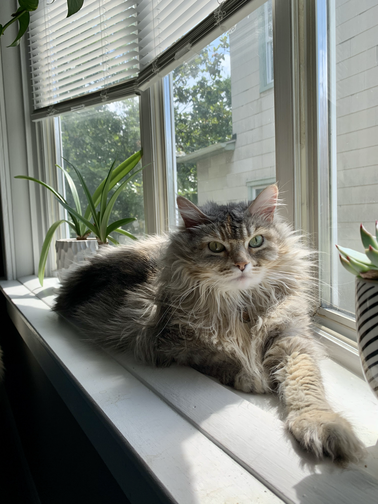
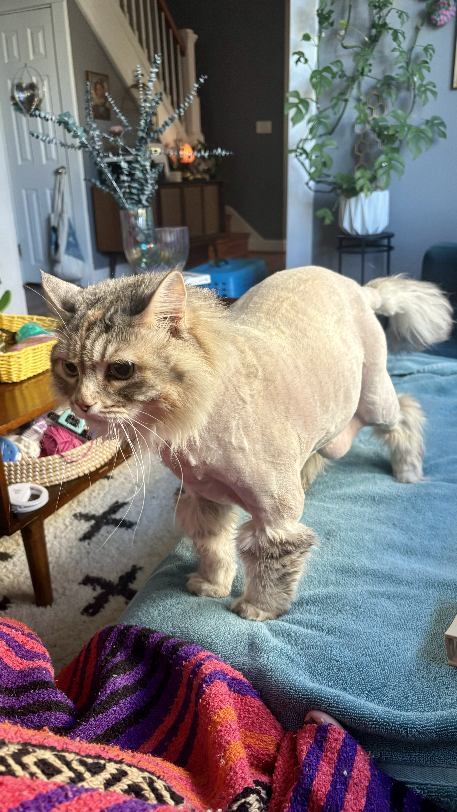
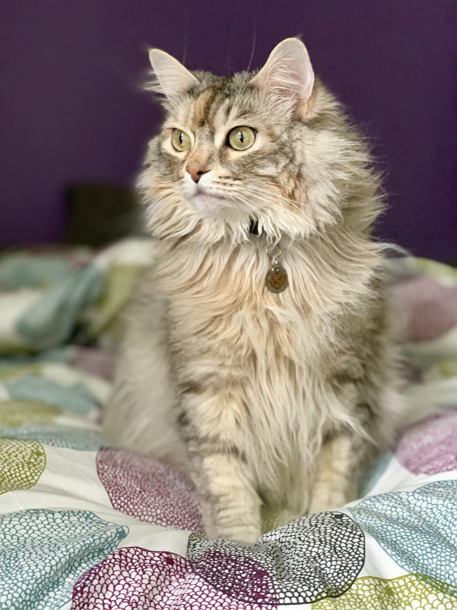

edtech product manager and chaotic good, equal parts crochet hooks, circuitry, and powertools. she/her/y'all.
hi! i'm christy 👋 i moved to baltimore back in 2019 after growing up in virginia and spending 15 years in nashville. i went to school for social work, worked in refugee resettlement, detoured into healthcare software, took an extended travel break to iceland for a few months, then came back to the states to pursue a tech career in 2014, which is what i've been doing ever since.
i'm passionate about fixing problems, ranging from the systemic/societal to smaller things like knitting and gardening and tinkering with electronics. i also really like experimental music and noise.
i've always been really fascinated by technology, but i think the internet has become sort of a hellhole. consequently, i've really fallen down the rabbit hole of free open-source software (FOSS) and have built up a pretty nice little homelab and home server where i'm learning lots of new stuff and studying the ways people are fighting surveillance, protecting free expression, and decentralizing the internet.
i believe that digital privacy is a human rights issue, billionaires shouldn't control the tech we rely on (or exist at all tbh), and human innovation and creativity is so powerful.
founding board president (2019); current secretary
We support artist-driven projects that connect across history, culture, and communities, and prioritize projects that are anti-racist and rooted in feminist ideology. We support visionary artists who aim to create a more compassionate, inclusive world, with a focus on those who have been historically under-represented and under-resourced in the performing arts, especially in the South. We do this through creative project management, fundraising, fiscal sponsorship, and convening.
Through our services, we help to lift inventive projects that challenge convention, paving the way for artists with mission-focused, community-responsive projects to share their work on a global scale by acting as a bridge to arts and culture partners worldwide. Unmanageable is a 501(c)(3) nonprofit, organized in the state of Tennessee.
## unmgmt.org
founding board president (2014); current board member
chatterbird is a Nashville-based chamber music ensemble. A 501(c)3 non-profit organization, chatterbird was founded in 2014 with a mission to explore alternative instrumentation and stylistic diversity in order to create thoughtful and inventive musical experiences.
Chatterbird works to expand classical music through thoughtful collaboration, strategic commissioning, and creative community partnerships. We explore alternative instrumentation, stylistic diversity, and interdisciplinary formats - and celebrate friendly, accessible concert settings. A chatterbird concert experience will surprise you. In addition to the clarinet, cello, or flute you might expect, you'll hear noisemakers, amplified tables, voices, zithers, bird songs, and electric mandolin.
## chatterbird.org
grantwriting support; housing volunteer
High Zero is the premier festival of Improvised, Experimental music on the East Coast, being fully devoted to new collaborations between the most inspired improvisors from around the world.
Lasting two weeks in total, the festival brings together 22 core musicians, but also involves a much larger subculture of musicians in Baltimore and on the East Coast. Unlike many related festivals, High Zero is not narrow in terms of sensibility or subculture, but rather widely inclusive of all the different types of experimental music-making in the moment. The fact that half of the festival's core participants are from Baltimore speaks to the depth of Baltimore's experimental music subculture, which in recent years has grown to be one of the richest cities in the country for experimental art.
The festival has a unique structure. HIGH ZERO is focused solely on new collaborations in freely improvised experimental music. Internationally famous musicians play side by side with younger "unknowns," united by their commitment to the musical imagination. Each year, Baltimore becomes a fertile meeting-ground for a large group of inspired players, drawn from a fascinating international subculture.
## highzerofoundation.org
core member; graphic design & press releases
Baltimore for Democracy is a ballot issue committee formed in Baltimore City in 2024 to defeat Question H--a proposed charter amendment that would've reduced the size of Baltimore City Council from 14 district seats to just 8, nearly halving residents' representation. Question H was backed almost entirely by wealthy Baltimore County resident and Executive Chairman of Sinclair Broadcasting Group, David Smith.
Mission: To empower and uplift the voices of Baltimore City residents, we are building a transparent and inclusive community organization that will participate in and shape the future of our community to combat misinformation and special interests.
## baltimorefordemocracy.org







